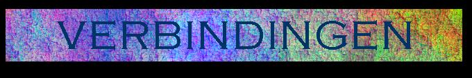

| Terug naar welkomstpagina! |

RiNi-wielrenploeg De wielrenploeg van (ex-)huisgenoten en aanverwanten!!!
Meta Mop Afgelopen zomer is door ons de Meta Mop uitgevonden. Kijk bij de speciaal hiervoor aangelegde MetaMop-pagina!!!
Eendendam de officiêle nazorg-pagina van het Eendenwereldtreffen in Maurik; veel verbindingen naar plaatsen met foto's!
Degeneratietheorie Peter Scheele is bezig met een boek over de (on)mogelijkheden van de evolutietheorie. Lees er nu alles over zodat je geen ongestoelde discussies meer hoeft aan te gaan!
Grolsch de mooiste pagina's, over het beste bier, uit de mooiste streek...
Kasteel Bloemendal Hotel Kasteel Bloemendal, gelegen in Vaals; neem een kijkje.
Citroen Club Nederland de mooiste informatie en plaatjes over dit curieuze automerk.
Enschede voor alle info over o.a. het nieuwe stadskantoor.
Progressive Rock de plek waar je alles vindt over symfonische rock.
Tunesië het land waar alles goed is (volgens de president)...
De Ambassade het andere huis.
Perron 0 ook een goed huis.
| Terug naar welkomstpagina! | vervaardigd 30-08-97 door Kromme Heut |